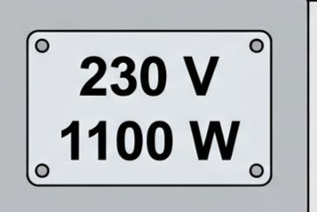
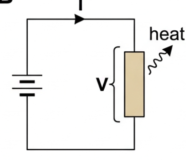
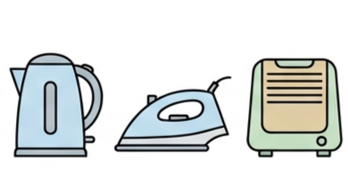
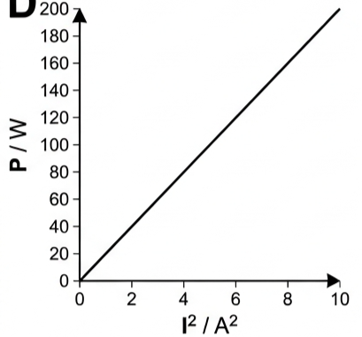
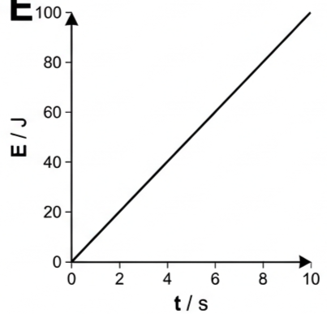
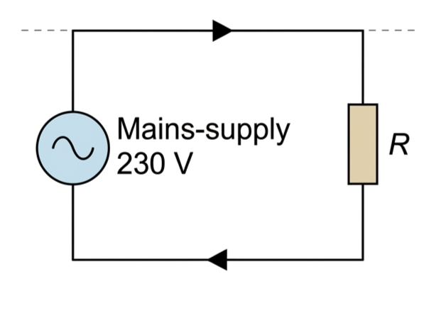
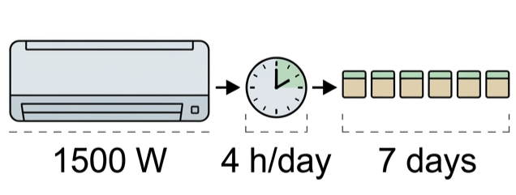

Part of B.5 Current and Circuits
· Unit B — IB Physics 2023
7 Lesson 7 of 7 · B.5 Current and Circuits
Electrical Power and Energy
Every resistor turns electrical energy into internal energy at a rate given by \(P=IV\). This lesson builds the three equivalent power formulas, uses them to check appliance labels and mains-voltage mismatches, and gets you comfortable converting between joules, watts and kilowatt-hours for real electricity bills.
🔌 Hook – what does the label on an appliance actually promise?
Every plug-in appliance carries a nameplate like "230 V, 1100 W". The voltage tells you what supply it expects; the wattage tells you the rate of energy transfer it is designed for at that voltage — not at any other voltage.

Fig 1 — A nameplate rating: the voltage and power it is designed to run at.
💡 Diagnostic question (think – then read on) — if a current of 3 A flows through a resistor with 6 V across it, how many joules are transferred to internal energy every second? Every second, 3 C of charge passes through, and each coulomb transfers 6 J — so the rate of transfer is \(3\times6=18\) joules every second, i.e. 18 W.
⚡ The three forms of the power equation
Electrical power, \(P\), dissipated by a resistor is the rate at which electrical energy is transferred to internal energy.
Definition$$P = IV$$
This comes directly from the definitions of current and p.d.: current is charge flow per time, and p.d. is energy transferred per unit charge, so their product is energy transferred per time — power.
From \(\dfrac{W}{\Delta t}=\dfrac{\Delta q}{\Delta t}\times\dfrac{W}{\Delta q}\)$$\text{power} = \text{current} \times \text{p.d.}$$
Because \(V=IR\), this can be rewritten in two other useful ways:
$$P = I^2R$$$$P = \frac{V^2}{R}$$
All three give the same answer for the same resistor — pick whichever one uses the quantities you already know.

Fig 2 — A resistor carrying current \(I\) with p.d. \(V\) across it transfers energy to internal (thermal) energy at rate \(P=IV\).
🔥 The heating effect, efficiency, and the kilowatt-hour
Whenever any current passes through any resistance, energy is transferred to internal energy and then to thermal energy. This is one of the most widespread applications of electricity, including heating water and heating air.
To get the total energy transferred in a given time, use energy = power × time:
Electrical energy$$E = VIt$$
Not all input energy does useful work — efficiency, \(\eta\), compares what you wanted out to what you put in (as in Topic A.3):
Electricity bills are charged in kilowatt-hours, not joules. \(1\,\text{kWh}\) is the energy transferred by a 1 kW device in one hour — \(1000\,\text{J s}^{-1}\) for \(3600\,\text{s}\):
Unit conversion$$1\,\text{kWh} = 3.6\times10^{6}\,\text{J} = 3.6\,\text{MJ}$$
🔗 Linking question — how can the heating of an electrical resistor be explained using other areas of physics? This links to understandings in Topic B.1 (thermal energy transfer at the particle level).

Fig 3 — The heating effect of a current is behind most everyday household heating appliances.
📈 Graph mastery – reading power and energy graphs
Graph type
Axes (X, Y)
Shape
What to read
Power vs current² (fixed \(R\))
\(I^2\)/A² · \(P\)/W
Straight line through the origin
Gradient \(=R\), since \(P=I^2R\)
Power vs voltage² (fixed \(R\))
\(V^2\)/V² · \(P\)/W
Straight line through the origin
Gradient \(=1/R\), since \(P=V^2/R\)
Energy vs time (fixed \(P\))
\(t\)/s · \(E\)/J
Straight line through the origin
Gradient \(=P\), since \(E=Pt\)

Fig 4 — \(P\) vs \(I^2\) for a fixed resistor: a straight line through the origin, gradient \(=R\).

Fig 5 — \(E\) vs \(t\) for a device running at constant power: gradient \(=P\).
✍️ Worked example B5.10 – an electric iron
An electric iron is labelled 230 V, 1100 W. (a) Explain exactly what the label means. (b) Calculate the resistance of the heating coil. (c) What would happen if the iron was used in a country where the mains voltage was 110 V?
1
Identify: the label gives the design voltage and the power at that voltage; use \(P=V^2/R\) to find resistance, then re-use \(R\) with the new voltage.
2
Data: \(V=230\ \text{V}\), \(P=1100\ \text{W}\); second scenario \(V=110\ \text{V}\), same \(R\).
Answer: (a) at 230 V the iron transfers energy at 1100 J every second. (b) \(R=230^2/1100=48.1\ \Omega\). (c) at 110 V: \(P=110^2/48.1=251\ \text{W}\) — about 0.25× the rated power, so the iron would not get hot enough to work properly. The reverse mistake (a 110 V iron on 230 V mains) would transfer energy at about 4× its rated power and overheat, permanently damaging it.

Fig 6 — The iron's heating coil as a single resistor across the mains supply.
✍️ Worked example B5.11 – the cost of running an air conditioner
In a city where electrical energy costs \$0.14 per kWh, predict how much it will cost to operate an air conditioner with an average power of 1500 W for four hours a day for a week.
1
Identify: find total energy in kWh, then multiply by the price per kWh.
2
Data: \(P=1.5\ \text{kW}\), 4 h/day, 7 days, \$0.14 per kWh.
3
Equation: cost \(= 1.5\times4\times7\times0.14\)
4
Answer: total energy \(=1.5\times4\times7=42\ \text{kWh}\); cost \(=42\times0.14=\$5.90\).

Fig 7 — The quantities needed for a running-cost calculation: power, hours per day, and days.
🌍 Real-world: reading an electricity bill
A meter records total energy used in kWh over a billing period. Multiplying by the price per kWh gives the cost — exactly the calculation in Worked example B5.11. Appliances left on standby, or with a high power rating run for long periods (heaters, kettles, air conditioners), dominate a household bill far more than low-power electronics.
✓ Examiner tip: always convert to kWh before multiplying by a price quoted "per kWh" — mixing joules and kWh in the same calculation is the single most common lost mark in cost questions.
🚀 Extension – why power lines use high voltage
Power lost to heating in a transmission cable is \(P_{\text{loss}}=I^2R\) — it depends on the square of the current, not on the power being delivered. To deliver the same power at a much higher voltage, a much smaller current is needed, so \(I^2R\) losses fall sharply. This is why grid transmission lines run at very high voltage and low current, then step down near consumers.
Challenge: a cable of resistance 20 Ω carries a current of 100 A. At what rate is thermal energy produced in it? Answer: \(P=I^2R=100^2\times20=2.0\times10^{5}\ \text{W}\) — 200 kW is being wasted as heat, which is why real grids use far higher voltages (and correspondingly lower currents) than this to deliver the same power.
⚠️ Trap corner – common mistakes
Misconception
Correct view
A higher-voltage appliance is automatically "more powerful"
Power depends on both voltage and current (or resistance) — \(P=IV\). A 110 V appliance and a 230 V appliance can have the same power rating if their resistances differ
Running an appliance on a lower-than-rated voltage is just "a bit weaker" but otherwise fine
Because \(P=V^2/R\), power falls with the square of the voltage ratio — a 230 V/110 V mismatch roughly quarters or quadruples the power, not just reduces it slightly
kW and kWh are the same kind of quantity
kW is a rate of energy transfer (power); kWh is a total amount of energy transferred over an hour at that rate. \(1\,\text{kWh}=3.6\times10^6\,\text{J}\)
All electrical input energy is transferred usefully
Only where \(\eta=100\%\), which real devices never achieve — efficiency \(=P_{\text{output}}/P_{\text{input}}\) is always less than 1
⚠️ Most common slip: forgetting to convert power to kWh (or time to hours) before multiplying by a price given "per kWh" — check every unit in a cost calculation before multiplying.
P = IV = I²R = V²/RE = VIt = Ptη = P_out/P_in1 kWh = 3.6×10⁶ JP ∝ V² at fixed Rcost = energy (kWh) × price/kWhtransmission: high V, low I, less I²R loss
Practice check — multiple choice
1. A resistor carries a current of 2.0 A with a p.d. of 5.0 V across it. What is the power dissipated?
A 2.5 W
B 7.0 W
C 10 W
D 25 W
2. A resistor is connected to half its rated voltage. Assuming its resistance is constant, its power dissipation becomes
A half
B a quarter
C unchanged
D double
3. How many joules are in 1 kWh?
A 1000 J
B 3600 J
C 3.6×10⁶ J
D 3.6×10³ J
4. A motor is 20% efficient. If its useful output power is 60 W, what is its input power?
A 12 W
B 80 W
C 300 W
D 600 W
Practice check — fill in the blanks
Complete the statements:
Electrical power dissipated by a resistor can be written as \(P=IV\), \(P=I^2R\), or \(P=\) . The total electrical energy transferred equals power multiplied by . One kilowatt-hour equals joules. Efficiency is defined as output power divided by power.
Exam‑style questions
Exam question · Calculate
Q38. A 12 V p.d. is applied across a 240 Ω resistor. (a) Calculate (i) the current, (ii) the power, (iii) the total energy transferred in 2 minutes. (b) What value resistor would have twice the power with the same voltage? (c) What p.d. will double the power with the original resistor? [6 marks]
✓ (a)(i) \(I=V/R=12/240=0.050\ \text{A}\). ✓ (ii) \(P=IV=0.050\times12=0.60\ \text{W}\). ✓ (iii) \(E=Pt=0.60\times120=72\ \text{J}\). ✓ (b) At the same \(V\), \(P=V^2/R\); doubling \(P\) needs half the resistance: \(R=120\ \Omega\). ✓ (c) At the same \(R\), \(P\propto V^2\); doubling \(P\) needs \(V\) scaled by \(\sqrt2\): \(V=12\sqrt2\approx17.0\ \text{V}\).
Exam question · Calculate / Show
Q39. A 2.00 kW household water heater has a resistance of 24.3 Ω. (a) Calculate the current that flows through it. (b) What is the mains voltage? (c) Show that the overall efficiency of the heater is approximately 85% if \(1.0\times10^5\ \text{J}\) are transferred to the water every minute. [5 marks]
✓ (a) \(P=I^2R \Rightarrow I=\sqrt{P/R}=\sqrt{2000/24.3}=9.07\ \text{A}\). ✓ (b) \(V=IR=9.07\times24.3\approx220\ \text{V}\). ✓ (c) Input energy in 1 minute \(=2000\times60=1.2\times10^5\ \text{J}\). ✓ \(\eta=E_{\text{out}}/E_{\text{in}}=1.0\times10^5/1.2\times10^5\approx83\%\) — approximately 85% within rounding of the quoted heater power.
Exam question · Determine / Comment
Q40.(a) Determine the rate of production of thermal energy if a current of 100 A flowed through an overhead cable of length 20 km and resistance 0.001 Ω per metre. (b) Comment on your answer. [4 marks]
✓ (a) Total resistance \(=20\,000\ \text{m}\times0.001\ \Omega\,\text{m}^{-1}=20\ \Omega\). ✓ \(P=I^2R=100^2\times20=2.0\times10^{5}\ \text{W}\) (200 kW). ✓ (b) This is a large, wasteful power loss — it is why real transmission lines are run at very high voltage and correspondingly low current, since loss scales with \(I^2\) not with the power delivered.
Exam question · Calculate / Draw
Q41.(a) Calculate the power of a heater that will raise the temperature of a metal block of mass 2.3 kg from 23 °C to 47 °C in 4 minutes (specific heat capacity = 670 J kg⁻¹ °C⁻¹). (b) Draw a circuit diagram to show how the heater should be connected to a 12 V supply and suitable electrical meters so that the power can be checked. [5 marks]
✓ (a) \(E=mc\Delta T=2.3\times670\times24=3.70\times10^{4}\ \text{J}\). ✓ \(t=4\ \text{min}=240\ \text{s}\); \(P=E/t=37\,032/240\approx1.5\times10^{2}\ \text{W}\) (about 154 W). ✓ (b) 12 V supply in series with the heater and an ammeter; a voltmeter connected in parallel across the heater only.
Exam question · Determine / State
Q42.(a) An electric motor is used to raise a 50 kg mass to a height of 2.5 m in 24 s. The voltage supplied to the motor was 230 V but it was only 8.0% efficient. Determine the current in the motor. (b) State two reasons why this process has a low efficiency. [5 marks]
✓ (a) Useful output energy \(=mgh=50\times9.8\times2.5=1225\ \text{J}\); output power \(=1225/24=51.0\ \text{W}\). ✓ \(P_{\text{input}}=P_{\text{output}}/\eta=51.0/0.080=638\ \text{W}\). ✓ \(I=P_{\text{input}}/V=638/230\approx2.8\ \text{A}\). ✓ (b) Resistive (\(I^2R\)) heating in the motor's coils; friction in bearings and moving parts; energy lost as sound/vibration — any two.
Exam question · Calculate
Q43.(a) Calculate the value of resistance that would be needed to make a 1.25 kW water heater in a country where the mains voltage is 110 V. (b) What current flows through the heater during normal use? [3 marks]
Q45. In 2022, the best mobile phone batteries were rated at 3.7 V, 5000 mAh. (a) Calculate how much energy (J) they store. (b) If such a battery is used with an average current of 100 mA, predict how many hours before the battery would be completely discharged. (c) Estimate how long completely recharging the battery will take at an average rate of 5 W. (d) Suggest why phone manufacturers do not install batteries which store more energy. [7 marks]
✓ (a) Charge \(=5000\ \text{mAh}=5.0\ \text{Ah}=5.0\times3600=1.8\times10^{4}\ \text{C}\). ✓ Energy \(=VQ=3.7\times1.8\times10^{4}=6.66\times10^{4}\ \text{J}\). ✓ (b) \(t=Q/I=5.0\ \text{Ah}/0.100\ \text{A}=50\ \text{hours}\). ✓ (c) \(t=E/P=6.66\times10^{4}/5=1.33\times10^{4}\ \text{s}\approx3.7\ \text{hours}\). ✓ (d) Larger batteries increase phone size, weight and cost, take longer to recharge, and raise safety/overheating risk — any relevant point.